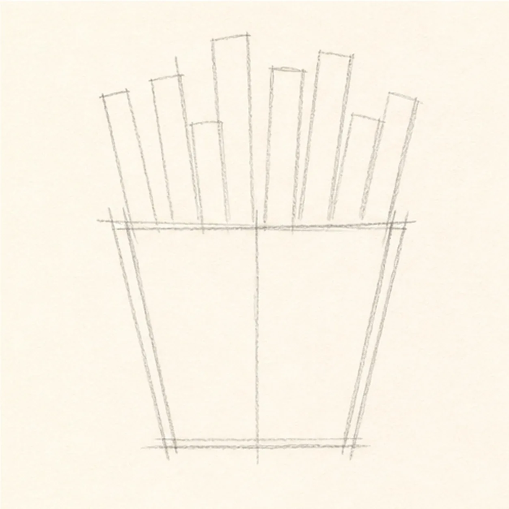
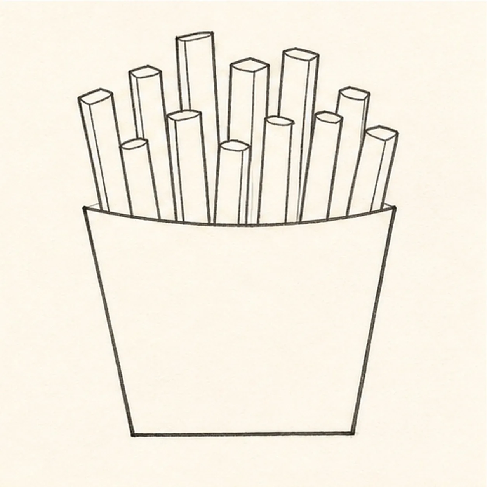
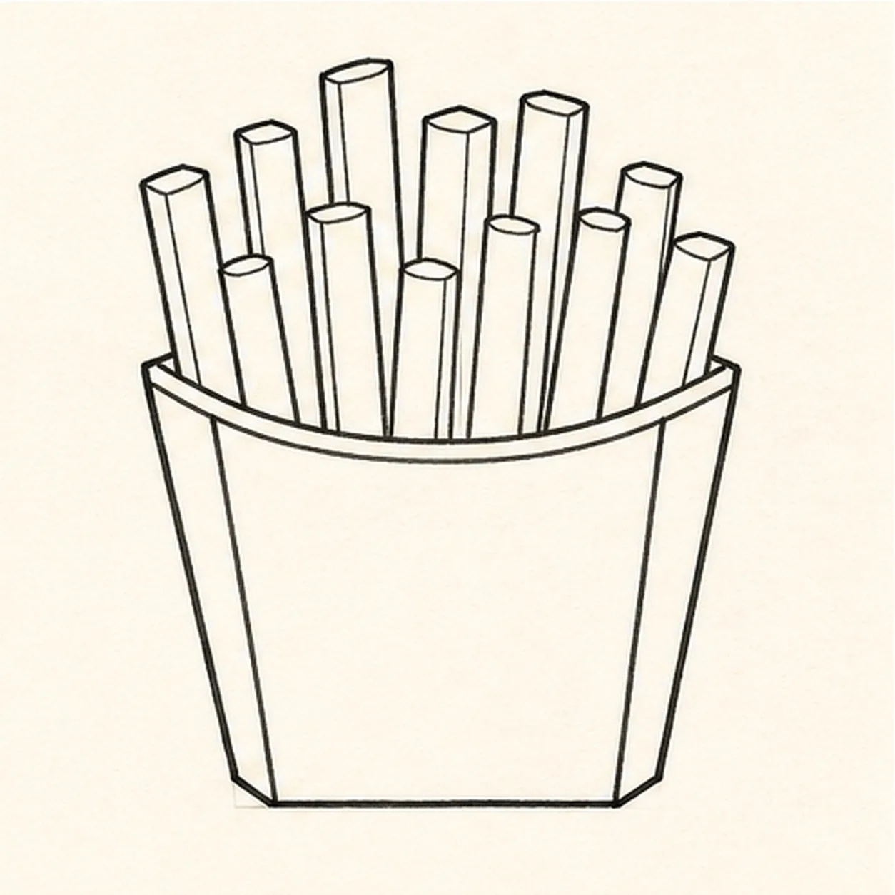
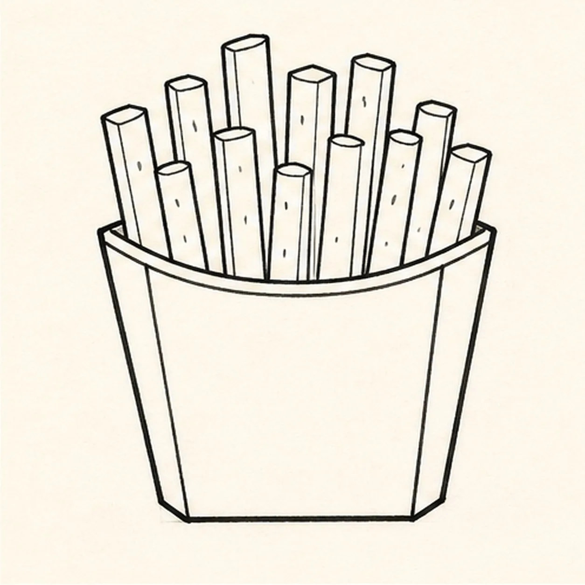
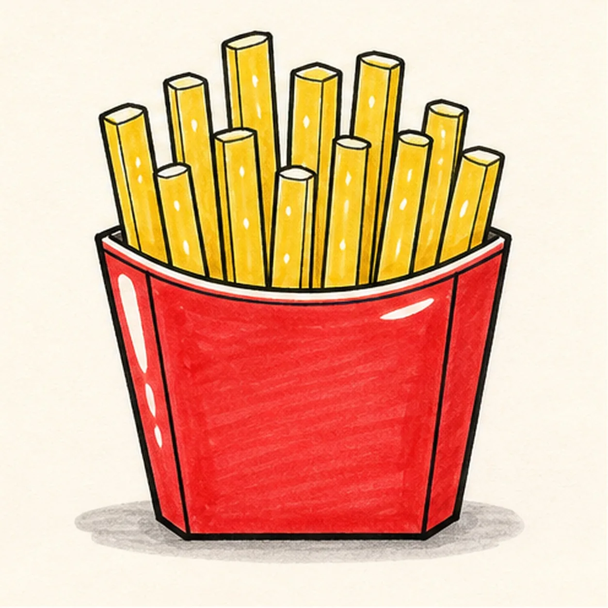

Felt-tip marker mode
Let's draw cartoon french fries
Treat this as one playful practice round: sketch the idea loosely, simplify the shapes, then commit with confident marker outlines and bright fills.
-
01

Block the carton and fries
Draw a light trapezoid carton guide, then add several vertical fry guides rising from the top.
Doodle tip: Fan the fry guides slightly instead of making them parallel. That little spread makes the carton feel full.
-
02

Draw the fry silhouettes
Turn the guides into a clear carton and separate rectangular fries with rounded ends.
Doodle tip: Vary the fry heights by a small amount. Too-even fries can look like a fence instead of food.
-
03

Fold the carton
Add the top rim, side panels, and simple fold seams on the carton.
Doodle tip: Keep the rim following the same curve across the front. A steady rim makes the carton look dimensional.
-
04

Thicken the marker lines
Thicken the existing black outlines, clarify the fry tips, and add a few small salt marks on the fries.
Doodle tip: Let the marker sit a second before adding tiny salt marks. Dry lines stay crisp instead of feathering.
-
05

Fill the marker color
Fill the carton red, fill the fries yellow, leave small highlight gaps, and place a soft gray shadow underneath.
Doodle tip: Pull the yellow strokes along each fry. Directional marker streaks help the fries feel tall and chunky.
-
06

Crisp up the fries
Thicken the black outlines and deepen the existing red carton, yellow fries, salt marks, highlight gaps, folds, and shadow.
Doodle tip: Stop before adding a face, words, or a border. The carton shape, fry stack, and marker color already do the work.